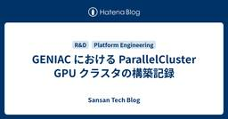
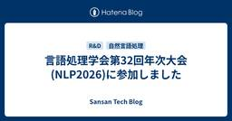

Sansan Tech Blog
https://buildersbox.corp-sansan.com/
Sansanのものづくりを支えるメンバーの技術やデザイン、プロダクトマネジメントの情報を発信
フィード

GENIAC における ParallelCluster GPU クラスタの構築記録
Sansan Tech Blog
Sansan株式会社 研究開発部Architect GroupでMLOps/Platformエンジニアをしている伊藤です。 今回は、GENIACに採択され、AWS上にSlurmによるGPUクラスタを構築した経験から、事前に知っておきたかったポイントをまとめます。構築中に遭遇した課題と、そのときの判断を具体的に書いているので、これからGENIACへの応募を検討している事業者やGENIACに採択された事業者の方が「ここは先に設計しておこう」と見積もれる材料になれば幸いです。 目次 GENIAC とは 技術選定: なぜスケジューラを使い、なぜ Slurm を選んだか 構築タイムライン 全体アーキテク…
1日前

Vol. 15 新規プロダクトを最速でリリースするために、デザイナーが意識したこと
Sansan Tech Blog
この記事は、Sansan Data Intelligence 開発Unit ブログリレーの第15弾です！！ こんにちは！ Sansan Data Intelligence（SDI）プロダクトデザイナーの来住（Kishi）です。2024年に新卒で入社し2年目が始まった時期から、SDIの開発に立ち上げメンバーとして参画しています。 この記事では、新規プロダクトを半年で体験設計、実装、リリースするためにデザイナーチームとして意識した3つのことを紹介します。 1. 立ち上げフェーズからデザインシステムを意識的に使う 1つ目は、画面設計時からデザインシステムを一貫して使い、実装でも活用してもらうことです…
2日前

EMConf JP 2026 参加 &「ストレッチゾーンに挑戦し続けることの難しさ」をテーマに登壇してきました！ 1
1
Sansan Tech Blog
はじめに 技術本部 Sansan Engineering Unit Mobile Application GroupにてEM（エンジニアリングマネジャー）として活動している赤城です。 2026年3月4日、Engineering Manager（EM）に特化したカンファレンスである、EMConf JP 2026に登壇者として参加してきました。 初めてのカンファレンス登壇ということもあり、準備から当日まで大変なことも多かったのですが、終わってみれば「今まで参加したカンファレンスの中で一番充実していた」と感じるほど、濃い一日になりました。 この記事では、登壇準備の裏側から当日の緊張と手応え、印象に残…
2日前

Vol.14 Base UI × CSS Modules で始めるヘッドレスコンポーネント開発
Sansan Tech Blog
この記事は、Sansan Data Intelligence開発Unit ブログリレーのVol.14です。 こんにちは、技術本部Data Intelligence Engineering Unitの茂木です。 私たちのチームでは、取引先データの品質を高めて企業のDXを後押しするデータクオリティマネジメント「Sansan Data Intelligence」（以下SDI）のフロントエンドをNext.js (App Router) + TypeScriptで開発しています。SDIはデータの連係設定や取り込み指示といった管理機能が中心のプロダクトで、Select・フォーム・ダイアログなど、操作系のU…
3日前

Vol.13 複雑さに立ち向かう軽量Spec駆動開発
Sansan Tech Blog
この記事は、Sansan Data Intelligence 開発Unit ブログリレー の第13弾です。こんにちは、技術本部 Data Intelligence Engineering Unitのしゅん（@MxShun）です。弊社では「SOCv2」と呼ばれるMaster Data as a Service (MDaaS)の構築を進めています。SOCv2が生まれる背景になった課題やアーキテクチャ全体像は、先日の永井の記事 Vol.03 SOCv2: MasterData as a Service (MDaaS) 10年もののSystemを作り替える をご参照ください。 今回は、複雑なSOCv2…
3日前

言語処理学会第32回年次大会(NLP2026)に参加しました
Sansan Tech Blog
こんにちは。研究開発部の佐藤です。2026年3月9日(月)から3月13日(金)にかけて、栃木県のライトキューブ宇都宮にて言語処理学会第32回年次大会(NLP2026)が開催されました。弊社からは、プラチナスポンサーとして佐藤・齋藤・橋本・大田尾・Loem・根本の6名のメンバーが現地で参加し、スポンサーブースの出展と5名によるポスター発表をしました。本ブログではその様子をお伝えします。
5日前

AIを活用した大規模iOSアプリのSwift Concurrency移行戦略
Sansan Tech Blog
はじめに こんにちは！技術本部 Sansan Engineering Unit Mobile Application Groupに所属するiOSエンジニアの劉 志輝です。 今回は、ビジネスデータベース「Sansan」のiOSアプリで進めている、Swift6時代に向けたSwift Concurrencyへの移行戦略についてお話しします。 このアプリは10年以上にわたって継続開発されており、UIKit + VIPERアーキテクチャで構成されています。 非同期処理にはRxSwift（Single、Observable、BehaviorRelay）とGCD（DispatchSemaphore、Disp…
10日前
Sansanのデータ化オペレーションを支えるデータ基盤hydra
Sansan Tech Blog
技術本部Digitization部Platform Engineeringグループの湯村です。Sansanでは、名刺や請求書などの情報を正確なデータへ変換するために、AIによる自動処理と人による補正を組み合わせた大規模な運用体制を構築しています。この記事では、こうしたデータ化の運用を拡大する中で直面した課題と、それを解決するために構築したデータ基盤hydraの設計について紹介します。
11日前
Vol.12 GKEにIAPを適用してコア機能に集中しよう
Sansan Tech Blog
技術本部Data Intelligence Engineering Unitのスタッフソフトウェアエンジニア藤原です。 Sansan Data Intelligence開発Unitブログリレーのvol.12として、少し趣向を変えて、今日はGoogle Cloudのちょっとだけマニアックだけど便利な機能、IAP（Identity-Aware Proxy）の活用について紹介します。
11日前
Vol. 24 Bill One開発Unit ブログリレー2025終幕
Sansan Tech Blog
はじめに こんにちは！技術本部 Bill One Engineering Unitの今村です。2025年4月に新卒でSansanに入社しました。あと少しで入社して1年が経つところです。 2025年11月12日に投稿した「Vol. 00 Bill One開発Unit ブログリレー2025を開催！& アーキテクチャConference 2025に協賛します！」で言及した通り、Bill One開発Unit ブログリレー2025を実施しました。エンジニアに加えて、デザイナーやQA、Bill Oneのプロダクト開発責任者など、多くのメンバーが参加し計24本のブログを執筆しました。 本記事では、ブログリレ…
13日前
RxJava → Coroutinesの置き換えをAIで6倍速にした話
Sansan Tech Blog
はじめに こんにちは。技術本部 Sansan Engineering Unit Mobile Applicationグループの鎌田です。2022年8月にSansanに中途入社し、SansanのAndroidアプリ開発およびiOSアプリ開発に携わっています。 この記事は同じくMobile Applicationグループの朴との共著でお届けします。 Mobileチームでは「技術負債返済」をテーマとしたTech Blogリレー企画を行っています。本記事はその第７弾です。 技術負債解消に向けた継続的運用の試み(2025-09-01) 10年もののSansan Mobileで負債・リスクに向き合う(20…
15日前
Vol.11 Sansan Data Intelligenceの爆速リリースを支える開発フロー
Sansan Tech Blog
この記事は、Sansan Data Intelligence開発Unitブログリレーの Vol.11 です。 こんにちは、技術本部Data Intelligence Engineering Unit Data Intelligence Groupでインターンをしている仲野です。 今回のブログでは、インターンとしてアサインされた私がキャッチアップを行い、すぐに軌道に乗ることができた、Sansan Data Intelligence（SDI）のアプリケーションサイドの開発フローを紹介します。 Sansan Data IntelligenceのArchitecture SDIの開発において、Arch…
16日前
AI活用によりノンエンジニアが実装に参画し、双方向に役割を越境するチームへと発展した話
Sansan Tech Blog
こんにちは！Digitization部の宮野隼吏です。Digitization部所属ですが、エンジニアではありません。コードは1行も書けません。そんな私がAIを活用してライトなUI/UX改善や機能実装をし始めた結果、チームでどんな変化が起きたかをお話しします。 3行サマリ チームの現在地 フェーズ1：Devin AIによる自律的実装を試みた時期 フェーズ2：Cursorによる「手触り感」を持った開発へ エンジニアの価値を最大化し、双方向に越境する 最後に 一緒に挑戦してくれる仲間を募集中です 3行サマリ ノンエンジニアがCursorやDevin AIを活用して一部実装、ステージング検証まででき…
16日前
「渋⾕ Biz × AI: ビジネスにおける AI 利活⽤ 事例勉強会 第4回」レポート
Sansan Tech Blog
今回で4回目となった渋谷 Biz × AI 勉強会最近は家の近くにおいしいスパイスカレーのお店を見つけて良い気分です。研究開発部の吉村です。今回は、2026年2月16日にSansan株式会社で開催された、株式会社サイバーエージェント、株式会社ビズリーチ、Sansan株式会社の三社合同共催による「渋谷 Biz × AI: ビジネスにおける AI 利活用 事例勉強会 第4回」のレポートをお届けします。
17日前
Merakiダッシュボードを開かないネットワーク運用を目指してーMCPサーバー自作と活用事例
Sansan Tech Blog
Merakiの情報を確認したいときに、ダッシュボードへのログインを手間に感じていませんか？ あるいは、作業手順書とMerakiのデバイス情報を行き来するのに手間を感じていませんか？ 私たちはMeraki専用のMCP（Model Context Protocol）サーバーを開発し、日常の確認作業の多くをダッシュボードなしで完結させることを目指しました。 はじめに こんにちは、Sansan株式会社 コーポレートシステム部 末次です。コーポレートシステム部は、いわゆる情報システム部門にあたります。 部のミッションとして掲げているのが「EX（従業員体験）をシンプルにする」というものです。その中で私たち…
18日前
App-based ライフサイクルからScene-based ライフサイクルへの移行対応で見つけた既存バグと学び
Sansan Tech Blog
はじめに 技術本部 Sansan Engineering Unit Mobile Application GroupでiOSエンジニアとして開発に携わっている新卒1年目の松山（ @akidon0000 ）です。 今回は、iOS 27で必須対応となる「App-based ライフサイクルからScene-based ライフサイクルへの移行」の対応を終えたので、その内容についてご紹介します。 iOS 27からのScene-based ライフサイクル必須化 2025年6月に開催されたWWDC25で、Appleから重要な発表がありました。 "As scenes are vital for ensuring…
20日前
Vol.10 立ち上げからリリースまで、「シュッと話す」文化で走り抜けたSDI開発チームの話
Sansan Tech Blog
この記事は、Sansan Data Intelligence 開発Unit ブログリレーのVol.10です。こんにちは、技術本部 Data Intelligence Engineering Unitのエンジニアの遠藤です。これまでのブログリレーでは、技術選定やアーキテクチャなど、システムの設計や技術的な側面を中心にお伝えしてきました。今回は少し視点を変えて、技術ではなく「チーム」にフォーカスし、Sansan Data Intelligence（以下、SDI）の開発チームがどのように立ち上がり、約6カ月でリリースまで走り抜けたのかをお話しします。
23日前
freee × Sansan QA × AI 現場最前線 イベントレポート +告知
Sansan Tech Blog
先日2/18に、フリー株式会社様とSansanの共催でQAに関する共同イベントを開催しました！ 本ブログは簡単なイベントレポートと、時間の都合上回答できなかった質問について、回答いたします。 https://sansan.connpass.com/event/379826/ イベントレポート 改めまして、今回のイベントにて登壇いたしました、 技術本部 Quality Assurance Engineering Unit SETチーム所属の大房です。 当日は「【テーマ2】AIで自動テストの運用・保守はどこまで楽になるか？」にて、SansanのQA SETとしてAIの取り組みについて紹介しました。…
24日前
Vol. 09 グラフデータベースで企業変遷を管理する ―Spanner Graphパフォーマンス検証―
Sansan Tech Blog
まえがき この記事は、Sansan Data Intelligence開発Unitブログリレーの第9弾です。 こんにちは、技術本部Data Intelligence Engineering Unitの滑川です。 本記事ではSansan Data Intelligenceの中で動くMaster Data Systemに採用されている「グラフ構造」と「Cloud Spanner」を題材に、Spanner Graphがどのように活用できるのか、またそのパフォーマンスについて検証してみたのでご紹介したいと思います。
24日前
2026年3月技術イベント予定
Sansan Tech Blog
Sansan株式会社では、技術イベントや勉強会の主催・登壇・協賛を行っています。 各イベントの詳細については、以下のリンクからご確認ください。 ※開催状況により、すでに受付を終了している場合がございます。 ※掲載している内容は公開当時の情報です。最新情報は各イベントページをご確認ください。
25日前
Vol. 08 敢えて速度より質を重視するAI活用
Sansan Tech Blog
この記事は、Sansan Data Intelligence 開発Unit ブログリレーの第8弾です！！こんにちは。技術本部Data Intelligence Engineering Unit Data Hubグループの秋田です。今回のブログリレーでは、新プロダクトSansan Data Intelligence（SDI）の立ち上げメンバーが、多種多様な観点から立ち上げにどう関わったのかを取り上げています。私はSDI開発ではコアドメインのバックエンド実装やAIの導入推進を担当しています。今回はSDI開発立ち上げ期においてAI活用をどのように進めたかについて話したいと思います。
25日前
地方で働く、セキュリティエンジニアのリアル
Sansan Tech Blog
©（公財）名古屋観光コンベンションビューロー（名古屋コンシェルジュ フォトライブラリー） こんにちは、Sansan株式会社 情報セキュリティ部の松尾です。 2025年12月、私は東京の本社から愛知県の中部支店へ異動しました。セキュリティ監視やインシデント対応を担うCSIRT/SOCという立場での地方勤務。 「24時間365日の監視体制が必要なセキュリティ業務を、地方でできるの？」と思われる方もいるかもしれません。 実際に3カ月弱経験してみて、「地方×セキュリティ」の働き方には大きな可能性があると実感しています。今回は、その実体験をお伝えしたいと思います。 私の仕事：SOCとCSIRTって何？ …
1ヶ月前
Matsuriba MAX 2026にゴールドスポンサーとして協賛します
Sansan Tech Blog
こんにちは。Sansan中部支店でEightの開発をしている井上です。 昨年に引き続き、Sansanは東海地方最大の学生エンジニアイベント「Matsuriba MAX 2026」にゴールドスポンサーとして協賛することになりました！🎉 matsuriba.nxtend.or.jp
1ヶ月前
Vol.07「アドホック」と「半自動化」と「汎用化」、3つのテーマを乗り越えた分析プロジェクト
Sansan Tech Blog
この記事は、Sansan Data Intelligence 開発Unit ブログリレーVol.07です。 はじめに：3つのハードル Sansan事業部プロダクト室と研究開発部に所属している、データサイエンティストの丸尾です。私は、新規プロダクトであるSansan Data Intelligence（SDI）の開発において、立ち上げ期のカオスの中にいました。SDIは、顧客のデータをお預かりして名寄せ・クレンジングを行うプロダクトです。その性能を元に意思決定が行われるため、トライアルとして実際にデータをお預かりし、名寄せ結果やデータの傾向を分析してレポートするサービスを提供しています。私はこのト…
1ヶ月前
今、Eightで働く魅力
Sansan Tech Blog
名刺アプリ「Eight」の開発責任者の間瀬です。Sansan株式会社に入社して15年以上が経過しました。Eightには公開前のアルファ版の時代からインフラ担当として関わっており、AWS、Chef、Terraformなどその時々の新しめのサービスやツールの導入など、さまざまな ”歴史” を築いてきました。 一生現場のエンジニアとしてやっていくものと思っていましたが、インフラやSREのグループマネージャを経てEight開発全体の責任者となっていました。インフラだけでなくWebアプリケーションエンジニアやモバイルアプリケーションエンジニアもマネジメントする立場になるとは、夢にも思っていませんでした。…
1ヶ月前
Scaling Security at Sansan: How We Built an AI Agent to Automate Design Reviews
Sansan Tech Blog
In December 2025, I joined the Product Security group at Sansan as an intern. Our team is responsible for the security posture of Sansan's entire multi-product ecosystem. This includes our sales digital transformation solution Sansan and our accounting AX solution Bill One. To maintain a high securi…
1ヶ月前
入社前から自分の仕事を奪うセキュリティレビューAIエージェントを作った
Sansan Tech Blog
はじめに 2025年12月に情報セキュリティ部Product Securityグループでインターンをしました床井です。 Product Securityグループは、ビジネスデータベース「Sansan」や経理AXサービス「Bill One」をはじめとする、Sansanが提供する全てのプロダクトのセキュリティ向上を目的とした業務に取り組んでいます。具体的には、内製で脆弱性診断や、実装に着手する前の設計書をセキュリティ観点でレビューする「セキュリティ設計レビュー」などを行っています。 今回はこのセキュリティ設計レビューを一部自動化するAIエージェント「Hayami」の作成に取り組みました。インターン…
1ヶ月前
Vol. 06 「その機能、本当に“今”必要ですか？」チームで挑んだ引き算と加速
Sansan Tech Blog
この記事は、Sansan Data Intelligence 開発Unit ブログリレーの第6弾です！こんにちは！Sansan Data Intelligenceのプロダクトマネジャー（PdM）の家後佑美です。 今回のブログリレーでは、エンジニアのメンバーがそれぞれの専門性を活かした技術的なトピックを綴っています。私はPdMという立場から、エンジニアやデザイナーと共に、職能の境界を超えてプロダクトを研ぎ澄ませていった裏側を、少し違う角度から書かせてもらおうと思います。
1ヶ月前
Vol.05 Sansan Data Intelligence CRE組織立ち上げの現在地
Sansan Tech Blog
この記事は、Sansan Data Intelligence 開発Unit ブログリレーの第5弾です。 こんにちは。技術本部 Data Intelligence Engineering Unit Data Hubグループの髙芝です。 2025年12月のSDI（Sansan Data Intelligence）ローンチから約2カ月。これまでのブログリレーでは、SDIを支えるアーキテクチャやデータ基盤の深部についてお伝えしてきました。 本日は、その技術を「顧客の信頼」へと繋ぐための挑戦——CRE（Customer Reliability Engineering）組織の立ち上げの現在地についてお話し…
1ヶ月前
場所を理由に挑戦を諦めない。Sansanが地方拠点採用を強化する理由
Sansan Tech Blog
年末に、新卒で東京に来て以来初めて引越しをしたCTOの笹川です。 引越し先も、引越し前と同じ都内ですが、今回は東京以外のSansanの地方拠点について書いてみようと思います（本題と関係ないですが、笹川は札幌出身です）。 Sansanには、渋谷にある本社オフィスの他に、たくさんの地方拠点があるのをご存知でしょうか。 この記事では、Sansanが地方拠点においてエンジニア採用を強化している理由と、地方拠点で働くメリットについてお伝えしたいと思います。 この記事を読んで少しでも興味を持った方は、以下のカジュアル面談フォームよりご応募ください。オンライン、オフライン問わず、笹川をはじめSansanのエ…
1ヶ月前